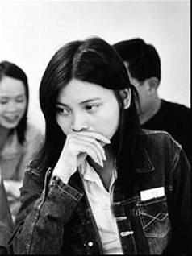
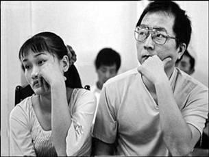

Tiền Phong - Vân ở Đồng Tháp. Bà dì về quê dắt cả chùm hơn chục cô lên Sài Gòn, nói lấy chồng Đài Loan sướng lắm, có nhiều tiền gửi về quê. Vân nói, em thích đi máy bay lắm, em cũng chỉ mơ ước suốt ngày được ngồi xem ti vi, nên đồng ý ngay.

Chồng Vân về ra mắt nhà vợ, chụp cả chục cái ảnh quanh nhà lợp lá, đề rõ chú thích vào dưới ảnh: Nhà vợ khi chưa cưới. Nhà lá, chưa có điện. Đi xuồng rất xa.
Sau này, tôi gặp chồng Vân trên mạng, trong diễn đàn các ông chồng Đài Loan lấy vợ Việt. Tôi nhận ra ngay bởi tấm ảnh cái chòi rơm có chú thích: "Nhà vợ khi chưa cưới, nhà lá, chưa có điện, đi xuồng rất xa". Ngoài cửa có người đàn bà đạp xe ngang dừng lại nhìn, chồng Vân nói, đó là mẹ vợ tôi.
Chồng Vân tên Lý Nghĩa, lúc ra mắt bảo nhà vợ là, tôi giàu lắm, tôi làm giám đốc bên Đài. Buôn bán tốt, ngày nào cũng có khách hàng. Lý Nghĩa cũng tử tế nên đưa hai nghìn đô cho nhà Vân, bảo sửa sang lại nhà cửa chờ ông qua cưới.
Hơn nửa năm sau, Lý Nghĩa mới qua cưới. Thành ra Vân rảnh rang, trong lúc chờ chồng rước, chỉ ngồi sơn móng tay. Cả họ hàng thấp thỏm, ở quê ngày nào cũng hỏi.
Vân sợ chồng, sợ ăn, sợ những hũ cốt đựng tro người chết quanh nhà, sợ mùi ám từ người chồng chưa bén hơi, sợ chiếc xe tang kềnh càng, sợ núi cao vắng người, sợ thức ăn nhiều dầu lắm thịt của người Đài
Tính Vân xởi lởi, hiếu kỳ, ngày đầu vừa từ sân bay về, đi mãi lên núi mới đến nhà chồng, giữa một xóm vài nóc nhà lẻ loi tồi tàn, bước vào thấy nhà cũng lợp ngói, tường gạch xây mộc không trát, Vân đặt vali xuống hỏi chồng, nhà mình đâu?
Chồng bảo, nhà mình đây! Vân té xỉu!
Trong quán ăn, Vân cười ồ ồ bảo tôi, chị ơi em còn xỉu vài lần nữa kia!
Cứ tưởng giám đốc Đài Loan phải giàu sang, nào ngờ rời nhà lá sang ở nhà gạch. Nửa năm mới sang cưới vợ được, vì còn bận đi vay tiền. Chồng em bảo, anh có nói dối em đâu, anh làm giám đốc thật mà. Công ty có hai người, anh và ông anh trai.
Chồng Vân làm giám đốc, anh chồng làm lái xe, một cái xe thoạt trông rất kỳ quặc.
Hôm sau Vân nhất quyết đòi tới công ty. Là một cái nhà chất đầy chai lọ xung quanh.
- Chai lọ gì đây hả chồng?
- Hài cốt với tro người chết không đó!
Thì ra là công ty nhà táng, Vân lại xỉu luôn tại chỗ. Tỉnh dậy khóc bù lu bù loa.
Thảo nào chồng nói, buôn bán tốt, ngày nào cũng có khách hàng! Ôi trời ơi!
Sợ chết cứng, Vân không để cho chồng chạm vào người mình một cái nào. Cô gái quê nhút nhát thành ra sợ hãi, suốt ngày chỉ dám ngồi trong nhà.

Thế là, ước mơ được suốt ngày ngồi xem ti vi của Vân đã trở thành hiện thực! Cô ru rú trong nhà, bấm hết kênh này tới kênh khác, mệt thì đi ngủ.
Xuống núi đường xa, Vân sợ thế giới ngoài kia.
Tôi nói với Vân:
- Cho chị số điện thoại, chị sẽ gọi lại, kiếm hộ chị một công việc như em!
Vân không còn giúp việc ở quán ăn Việt Nam cạnh ga Đài Trung nữa. Quán ngày càng phát đạt, người Việt Nam đổ sang đây ngày càng đông, có thể cảm tưởng ra đường chạm mặt nói to sẽ thấy người Việt.
Những cuộc họp mặt sau xe rác của các chị ô sin Việt Nam ngày càng đông vui. Một lần, có một người đàn ông Việt Nam đi đổ rác. Hỏi ra biết quê Long An, sang đây làm ô sin đổ bô cho một bà già tám mươi trên tầng hai mươi tư của cao ốc. Ngạc nhiên quá, tôi đứng lại hỏi, anh có thật là khán hộ công giúp việc nhà không anh?
Anh ta ngượng nghịu nói, nộp bốn chục triệu rồi, môi giới bảo sang đây làm gì thì mình làm nấy.
Và anh nói nhỏ. Mai tôi trốn đi. Sang để mà trốn chứ ai chịu đi đổ bô cho bà già. Em biết chỗ nào làm mách với nhé.
Tôi cũng đang tìm việc đây. Người như anh, bán đi cũng được một nghìn đô. Nhưng tôi không cần tiền ấy. Vả lại, biết là mai bỏ trốn, tức là đã có cô dâu Việt Nam nào đó giăng sẵn lưới đón lõng anh rồi.
Buôn người không phải là dắt tay qua biên giới, đưa gái đi làm điếm đâu. Buôn người chỉ là hôm nay đi đổ rác, làm quen với một người tay xách túi rác phân loại cũng như mình. Ngày mai mình cho họ địa chỉ để trốn, mình được năm nghìn tệ. Một túi rác và hai cú điện thoại cũng là buôn người, với chính quyền Đài Loan, và cũng là đổi đời, với chúng tôi.
Giá mà tôi có trong túi một nghìn đô.
Gặp Vân ở công ty bán thẻ điện thoại ở ngay gần quán. Vân bảo, sao chị không gọi điện thoại cho em? Vừa có chỗ làm ngon lắm, đi phát tờ quảng cáo, phát mỗi ngày được một nghìn tệ, còn hơn làm công xưởng.
Tờ rơi quảng cáo màu vàng, của Western Union. Mỗi ngày một nghìn tệ bằng tiền mua sữa cho con tôi một tháng. Làm hai ngày đủ tiền mua bỉm và quần áo. Làm ba ngày đủ tiền nuôi gia đình tôi cả tháng ở Sài Gòn.
Nhưng mẹ tôi chưa bao giờ lấy của tôi một đồng nào, dù tôi gọi điện về hỏi. Mẹ tôi bảo, cháu ngoan lắm, ba tôi cũng bắt đầu yêu cháu, ông bớt uống rượu rồi.
Chiều chiều ông đặt cháu lên xe nôi, đẩy ra giữa ngõ mồ côi
Vân mặc quần ngắn tới bẹn, đi đôi bốt to đùng, thò ra hai cái đầu gối to toàn xương. Vân nói, em sang Đài Loan gầy đi mất sáu bảy ký, là do sợ.
Vân sợ chồng, sợ ăn, sợ những hũ cốt đựng tro người chết quanh nhà, sợ mùi ám từ người chồng chưa bén hơi, sợ chiếc xe tang kềnh càng, sợ núi cao vắng người, sợ thức ăn nhiều dầu lắm thịt của người Đài.
Xuống được núi, chồng dắt Vân vào quán Việt Nam, giờ đến lượt chồng Vân sợ, nôn lấy nôn để khi thấy vợ chọc thìa ăn mấy con vịt con chưa nứt mắt. Dã man quá, giờ đến lượt ổng tránh em ra, ha ha... Chắc ổng luôn tưởng tượng ra con vịt trùi trụi nằm thây lẩy trong bát trứng vịt lộn sũng nước.
Vân dễ tính, xởi lởi, đã kể là không dứt.
- Về sau này cứ thằng nào qua tán tỉnh, em lại dẫn chúng nó đi ăn hột vịt lộn. Ha ha, mấy chàng Đài Loan chạy bán sống bán chết.
Tôi đi ăn trưa với Vân, chúng tôi ngồi trong quán mì mở máy lạnh. Tự rót một ly hồng trà lạnh. Bát mì của tôi còn nguyên.
Vân nói gầy đi mà mặt vẫn cứ mũm mĩm trẻ con.
- Hồi ra văn phòng Đài Bắc phỏng vấn, ông phỏng vấn buồn cười lắm, ổng hỏi em: Đêm qua ngủ với chồng mấy lần!
- Ôi vậy hả?
- Em bảo em chả nhớ, nhưng chồng "làm" lâu lắm, chắc hai lần! Phần ông chồng thì ổng trả lời là, đêm qua ba lần! Chắc "hai lần lâu lắm" cũng gần như "làm ba lần" nên bọn em qua.
Tưởng tượng những gương mặt ngồi chờ được hỏi, ngồi chờ được sang Đài, vợ chồng không nhìn vào mắt nhau.
Tưởng tượng ông viên chức ngoại giao Đài Loan hằng đêm khốn khổ nằm nghĩ xem, mỗi sáng mai hỏi những câu gì mới chứng tỏ mối hôn nhân Việt Đài kia có thật, những người ngồi kia không lừa ông.
Bắt một ông viên chức ngoại giao đi chứng minh một mối tình có thật dẫn tới hôn nhân có thật, khó làm sao.
Ngay cả tôi, thoát khỏi ái tình và hôn nhân, cũng đã không làm sao chứng minh được những điều đó là có thật trong đời mình.
Tôi bảo Vân:
- Có lẽ chị sẽ đi khỏi đây!
- Đi đâu?
- Không biết, nhưng cứ rời Đài Trung rồi tính.
Ở đây có quá nhiều duyên nợ, vấn vương. Một người đàn bà Việt như tôi đã để lại những ngày tháng hạnh phúc đau khổ ở lại đây, bao nhiêu người đàn bà Việt sẽ đến và đi khỏi thành phố này.
Có những nỗi đau gọi là mãi mãi, không phải trong tâm thức những người vợ ấy, mà là trong tiềm thức, khi những người đàn bà dạt xứ hạnh phúc thì ít đau đớn lại nhiều.
Lần đầu tiên tôi thấy Nhan khóc. Nhan nắm tay tôi ngoảnh mặt đi. Tôi rất muốn làm một điều gì đó để an ủi người tôi yêu.